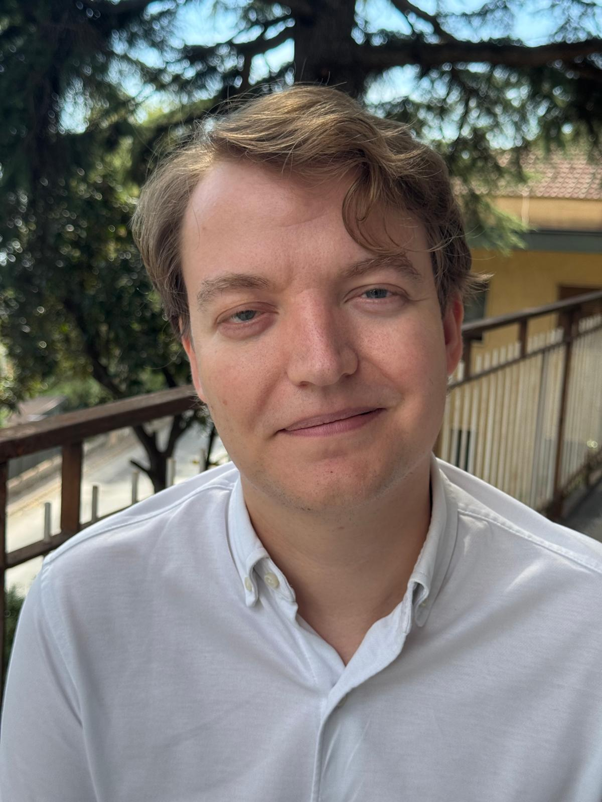

Thomar P. van Hees
PhD in Economics and Finance
Tor Vergata University of Rome
On the 2026–27 economics job market
About
I am an economist working on monetary economics, banking and macro-finance. My research uses search-theoretic models of money to study how information frictions shape the banking system, liquidity provision and the transmission of monetary policy. I received my PhD from Tor Vergata University of Rome in September 2026 under the supervision of Fabrizio Mattesini.
Fields: Monetary Economics · Banking · Macroeconomics · Financial Regulation · Payments · Search Theory
Research
Job Market Paper
Traditional vs. Shadow Banking in a Monetary Economy
Abstract
Why do some depositors fund traditional banks while others fund shadow banks? This paper develops a monetary model of banking to provide an information-based explanation for the coexistence of traditional and shadow banks. Depositors can either monitor banks ex ante, at a cost that differs across households, or rely on costly ex post verification. Shadow banks attract depositors who monitor, while traditional banks attract depositors who rely on verification. The key mechanism links money demand to monitoring incentives: monitoring depositors earn a higher deposit rate and hold more money, which affects aggregate liquidity and the size of the shadow banking system, which in turn affects the incentive to monitor. With heterogeneous monitoring costs, monitoring decisions are either strategic complements or substitutes depending on the nominal interest rate. The model predicts a non-monotone response of the shadow banking system to the nominal interest rate. Because households ignore their effect on aggregate liquidity and on verification costs, the shadow banking system is too large at low interest rates and too small at high interest rates.
Working Papers
Interbank Trade, Liquidity Reallocation and Welfare in a Monetary Economy
Abstract
We study positive and normative implications of interbank trade in a monetary economy in which banks require liquidity to finance investment opportunities and meet bilaterally to offset liquidity imbalances after these opportunities are realized. When the nominal interest rate is low, the economy features an abundant-liquidity equilibrium. In this region, we show analytically that either full participation or a complete shutdown of the interbank market maximizes welfare, depending on the bargaining power of banks with investment opportunities. When the nominal interest rate is high, the economy instead features a scarce-liquidity equilibrium. In this case, full participation is optimal when bargaining power is low. However, there are parameterizations of the model in which, when both bargaining power and the nominal interest rate are sufficiently high, welfare is maximized by restricting, but not fully shutting down, participation in the interbank market.
Multidimensional Stock Market Liquidity and Business Cycles
Abstract
Recognizing the difficulty in measuring stock market liquidity and its multidimensional nature, we comprehensively analyze the impact of multidimensional stock market liquidity on business cycles. Using the cross-sectional information contained in 7 different liquidity measures and applying a factor model approach, we find that stock market liquidity includes information on the future of the US. However, this information can differ significantly per liquidity dimension. We find evidence that the illiquidity ratio and the trading volume are better suited to capture information about the macroeconomy. In addition, we show that US liquidity measured by the illiquidity ratio and trading volume also contains information about the state of the U.K., Canadian, and Australian economy. Finally, we show that the commonality in liquidity cannot fully explain the relationship between stock market liquidity and the real economy. Our findings exemplify the importance of liquidity proxies in explaining the state of the macroeconomy.
Work in Progress
- Bank Risk Taking with Demandable Deposits
- Asymmetric Information, Liquidity, and Fire Sales
- Search, Price Dispersion, and Prominence
Policy Writing
- Basisinkomen – Gratis geld voor iedereen: wie betaalt? (Basic income – free money for everyone: who pays?), Liberale Reflecties, 2018
Teaching
Tor Vergata University of Rome
- Teaching Assistant, Advanced Macroeconomics II (MSc), 2023–2025
- Teaching Assistant, International Economics (MSc), 2023
Luiss University
- Teaching Assistant, Microeconomics (BSc), 2024
References
Fabrizio Mattesini (advisor)
Tor Vergata University of Rome
mattesini@economia.uniroma2.it
Paolo Varraso
Tor Vergata University of Rome
paolo.varraso@uniroma2.it
Andrey Alexandrov
Tor Vergata University of Rome
andrey.alexandrov@uniroma2.it
Contact
Department of Economics and Finance, Tor Vergata University of Rome
thomar.vanhees@students.uniroma2.eu